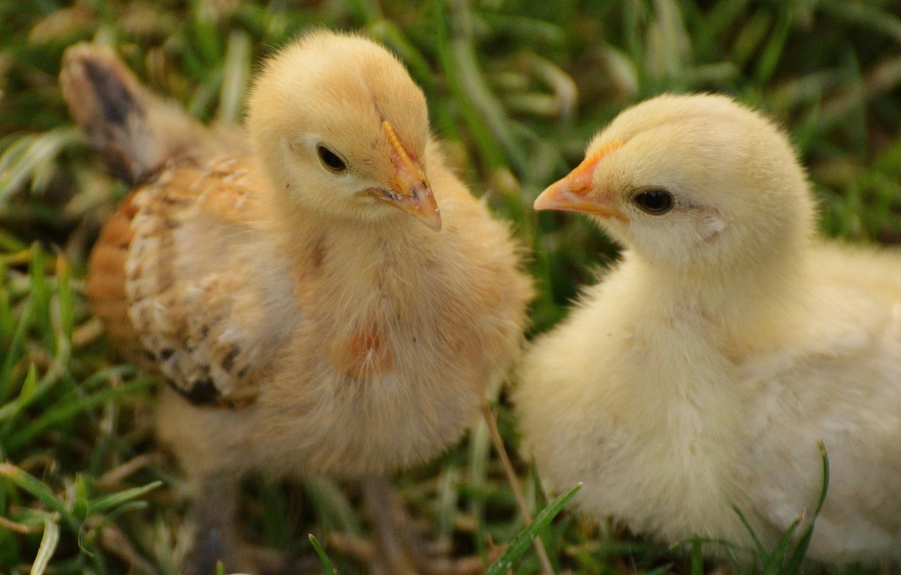
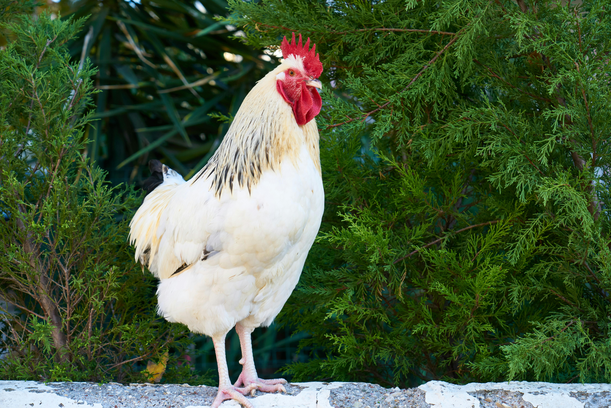
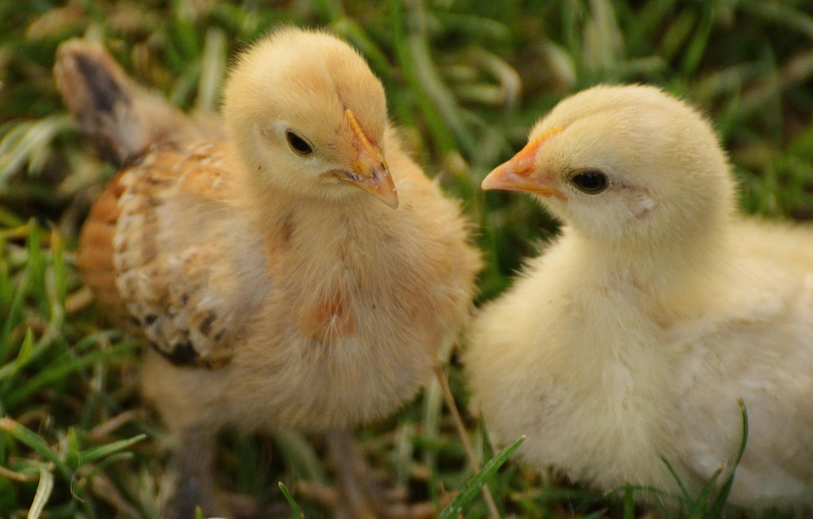
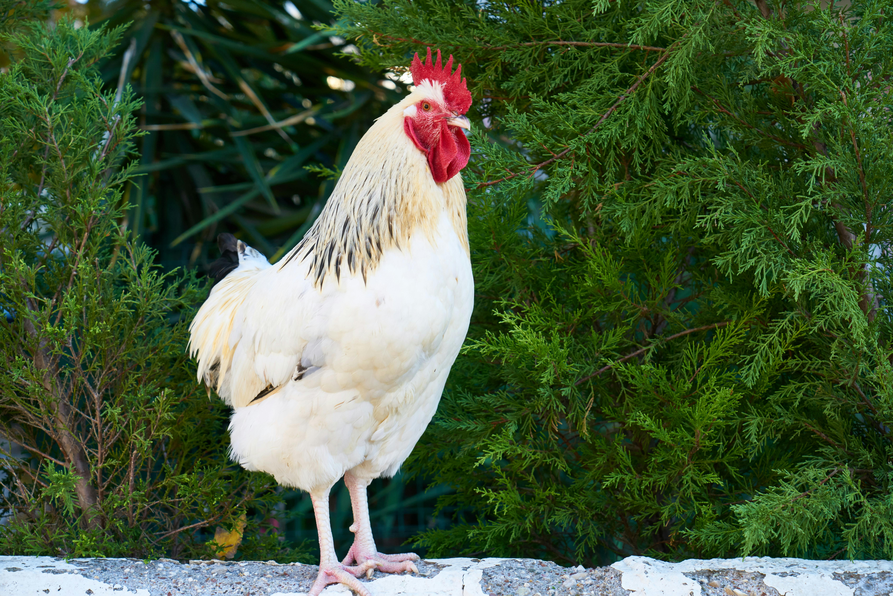

Welcome to Born Smart Poultry Farm
Trusted source of pure Kienyeji and improved Kienyeji poultry — expertly reared from day-old chicks to maturity.
Whether you're looking for fresh eggs, healthy meat, vigorous breeding stock, or day-old chicks — we've got you covered!
Place Your Order TodayOur Poultry
 




Our Poultry Categories
Kienyeji Hens
Kienyeji hens are indigenous birds known for their natural resilience, excellent meat flavor, and organic egg production. They are well-suited for free-range systems and have low maintenance needs. We rear them from day-old to point-of-lay and sell them as layers or for meat purposes.
Feeding Schedule: Fed thrice daily – morning (8:00 AM), midday (1:00 PM), and evening (5:30 PM). Water is provided throughout the day.
- Whole maize
- Vegetable scraps (e.g. sukuma wiki, pumpkin leaves)
- Commercial kienyeji mash
- Crushed maize and omena mix
Pricing: From KSh 700 - KSh 1,000 depending on age and size.
Improved Kienyeji Hens
Improved Kienyeji hens are hybrid varieties developed for better productivity in terms of both egg and meat yield. They grow faster, mature earlier, and are more uniform in performance compared to pure Kienyeji. We offer both pullets and mature layers for commercial and home setups.
Feeding Schedule: Fed four times daily – early morning (6:30 AM), late morning (10:30 AM), afternoon (2:30 PM), and evening (6:00 PM).
- Chick mash (starter)
- Growers mash (middle stage)
- Layers mash (from 18 weeks)
- Clean, fresh water available at all times
Pricing: Pullets: KSh 500 - KSh 700 | Mature Layers: KSh 1,200 - KSh 1,500
Chicks
We hatch and sell high-quality day-old chicks for both Kienyeji and improved kienyeji breeds. Our chicks are vaccinated and come with proper documentation. Ideal for farmers starting their own flocks with strong, disease-resistant stock.
Feeding Schedule: Fed five times daily with brooder temperature managed appropriately.
- Starter mash (high protein)
- Crushed grains with chick booster
- Clean, warm water with multivitamins
Pricing: KSh 100 - KSh 150 per chick (depending on breed)
Cocks
Our mature cocks are healthy and well-fed, ideal for meat or breeding purposes. They are raised under careful management to achieve optimal weight and meat quality. Available for sale at different maturity levels to suit different customer preferences.
Feeding Schedule: Fed three times a day with protein-rich supplements to boost growth and muscle development.
- Maize bran and sunflower cake
- Protein boosters (omena, soya meal)
- Fresh greens and clean water
Pricing: KSh 1,000 - KSh 1,800 based on weight and age
Farm Management & Biosecurity Practices
At Matisi Poultry Farm, we adhere to strict farm management protocols to ensure the health, safety, and productivity of our poultry. These practices minimize disease risks and maintain high standards of hygiene across the facility.
Biosecurity Measures
- Controlled entry points with footbaths and hand sanitizers
- Visitor restrictions and mandatory protective clothing
- Isolation units for sick or newly introduced birds
- Regular cleaning and disinfection of poultry houses and equipment
- Rodent and pest control to prevent disease spread
Farm Record Keeping
- Detailed logs of feed consumption and inventory
- Vaccination and medication records by batch
- Growth rate tracking for performance analysis
- Sales and customer orders documentation
Waste Management
We use composting systems for poultry droppings which are later utilized as organic fertilizer in crop production. This eco-friendly approach ensures zero waste and promotes sustainable agriculture.
Emergency Disease Response
- Immediate isolation and treatment of symptomatic birds
- Veterinary consultations for outbreak diagnosis and control
- Review and reinforcement of biosecurity protocols during outbreaks
Our farm is guided by both local veterinary regulations and modern agricultural best practices to ensure a safe, clean, and productive poultry environment.